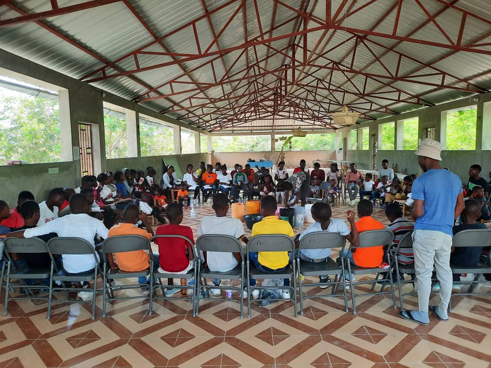
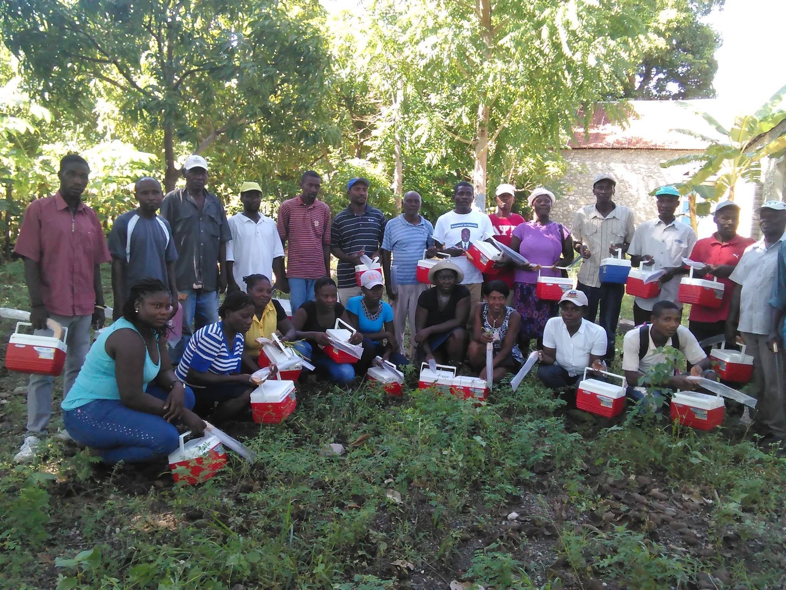

Éducation
Appui aux élèves, professeurs, parents et directeurs, avec un objectif d’accompagnement de 10 000 acteurs du système éducatif.

Ansanm nou ka fè tout bagay
Fondée le 01 mai 1992 dans la commune de Gros-Morne, l’AOG est une association reconnue d’utilité publique à but non lucratif. Elle agit pour l’amélioration des conditions de vie de la population de Grande Plaine et des communes de l’arrondissement de Gros-Morne.

Un engagement communautaire autour de l’éducation, l’agriculture, l’environnement, la jeunesse, l’énergie propre et les infrastructures locales.
Notre but
L’AOG porte une vision claire : devenir une association de référence, un modèle de développement local et de bénévolat responsable. Ses actions s’adressent aux enfants, aux jeunes, aux adultes et à l’ensemble des couches sociales de Grande Plaine.

Domaines d’intervention
Appui aux élèves, professeurs, parents et directeurs, avec un objectif d’accompagnement de 10 000 acteurs du système éducatif.
Irrigation solaire, banques de semences, élevage, reforestation et aménagement de pistes agricoles.
Éclairage de zones stratégiques et électrification solaire d’institutions publiques et communautaires.
Encadrement des jeunes, apprentissage de métiers, activités culturelles et leadership communautaire.
Appel à l’action
Les projets 2025-2030 couvrent l’agriculture, l’environnement, l’éducation, les activités génératrices de revenu, l’éclairage solaire, la formation et la construction d’un centre de lecture et d’animation culturelle.